Chapter 7: Fabrication, Packaging, Test & Bring-up¶
After tapeout, the design leaves the world of software and enters the factory. This chapter explains who manufactures chips, how process nodes and transistors have evolved up to 2026, what a PDK contains, and how a wafer is made step by step, including EUV lithography. It then follows the chip through yield, packaging (from simple wire-bond to CoWoS and Foveros), wafer sort and final test on ATE, lab bring-up, product qualification, failure analysis, and the global supply chain and export controls that shape the industry.
7.1 The Foundries: TSMC, Samsung, Intel, GlobalFoundries, UMC, SMIC, Rapidus¶
A foundry manufactures chips for other companies. TSMC is by far the largest and leads in advanced nodes. Samsung Foundry and Intel Foundry also offer leading-edge processes. GlobalFoundries, UMC, SMIC and others focus on mature and specialty nodes, and Japan's Rapidus is building a new 2 nm fab. Choosing a foundry and node is one of the biggest early decisions for any chip project.
Think of it like…
Foundries are like printing houses: a few can print glossy, ultra-fine art books, while many others print excellent everyday books at lower cost.
Real-world example
A fabless company plans three chips: an AI accelerator on TSMC N3 for best performance, an automotive microcontroller on a 28 nm process with embedded non-volatile memory, and a power-management IC on a 130 nm BCD process at a specialty foundry. Each foundry has its own PDK, IP ecosystem, pricing and capacity, so the team works with three different sets of rules.
How it works¶
- Compare nodes on PPA, cost per wafer, IP availability and maturity.
- Check capacity, geography and supply-chain risk.
- Sign NDAs and agreements to get the PDK and design rules.
- Use foundry-certified EDA flows and qualified IP.
- Plan prototypes (MPW) and production volumes with the foundry.
Who uses it
Architects, programme managers, operations/supply-chain teams and foundry account and application engineers.
Key takeaway
TSMC N2 entered volume production in late 2025; Intel 18A is in high-volume production; Samsung SF2 shipped in the Exynos 2600.
Going deeper
- Pure-play foundries such as TSMC, UMC, GlobalFoundries and SMIC only manufacture for customers; Samsung and Intel also design their own chips, so they must convince customers that designs and data stay separate.
- Choosing a foundry locks in much of a project: PDK, standard cells, memory compilers and interface IP are node-specific, so porting a design to another foundry means largely redoing physical design and IP.
- Wafer prices rise steeply at each leading node; press reports put 2 nm-class wafers at roughly US$30,000, several times the price of a 28 nm wafer, so die area matters enormously.
- Leading-edge capacity is concentrated in a handful of fabs, mostly in Taiwan; newer fabs in Arizona, Kumamoto (Japan) and Dresden (Germany) spread capacity but often run slightly older nodes.
- A typical engagement runs: NDA and PDK access, test chips and MPW prototypes, risk production, then volume production under a supply agreement fixing prices, capacity and quality targets.
- Foundries publish roadmaps at annual events such as TSMC's Technology Symposium and Intel Foundry Direct Connect; architects use them to decide years ahead which node a chip will use.
Common mistakes & misconceptions
- Comparing node names across foundries as if equal: '3 nm' at one foundry is not the same as at another, so compare density, speed, power and cost data.
- Assuming you can switch foundry late in a project; IP, PDK and qualification ties make that a major redesign.
- Ignoring capacity: a perfect design can still ship late if wafer or advanced-packaging capacity was not reserved in time.
Key concepts, tools, formats, standards & companies¶
| Name | What it does | Example |
|---|---|---|
| TSMC Taiwan Semiconductor Manufacturing Company (Hsinchu, Taiwan) · Company · Fabrication |
Pure-play foundry with roughly 70 % of global foundry revenue; fabs in Taiwan plus Arizona, Japan (JASM) and, from about 2029, Germany (ESMC). | TSMC N2 began volume production in Q4 2025; A16 volume production is now planned for 2027. |
| Samsung Foundry Samsung Electronics (South Korea) · Company · Fabrication |
Leading-edge foundry, first to ship GAA transistors (3 nm, 2022), now producing SF2. | Samsung's Exynos 2600 is built on its SF2 2 nm-class process. |
| Intel Foundry Intel Corporation (US) · Company · Fabrication |
Intel's manufacturing and foundry-services business, offering 18A and planning 14A for external customers. | Intel's Panther Lake processors are the first high-volume 18A products. |
| GlobalFoundries (GF) GlobalFoundries Inc. (US) · Company · Fabrication |
Specialty foundry focused on 12 nm and above, FD-SOI (22FDX), RF and silicon photonics; owns MIPS and, since June 2026, Synopsys's former ARC IP. | Many RF front-end and IoT chips are made on GF 22FDX. |
| UMC United Microelectronics Corporation (Taiwan) · Company · Fabrication |
Major mature-node foundry for 28 nm and above, displays, power and IoT. | A display driver IC is manufactured on UMC 28 nm. |
| SMIC Semiconductor Manufacturing International Corporation (China) · Company · Fabrication |
China's largest foundry; produces 7 nm- and 5 nm-class chips using DUV multi-patterning. | Huawei's Kirin 9030 was reported to use SMIC's N+3 5 nm-class process. |
| Rapidus Rapidus Corporation (Japan, government-backed) · Company · Fabrication |
New Japanese foundry building 2 nm GAA production in Hokkaido, targeting mass production in 2027. | Rapidus started its 2 nm pilot line in 2025 and released an early PDK to customers. |
| Specialty foundries Tower Semiconductor, X-FAB, Hua Hong, VIS, PSMC, SkyWater (IonQ), IHP · Company · Fabrication |
Foundries focused on analog, power, MEMS, RF, image sensors or research processes. | SkyWater, acquired by IonQ in July 2026, still manufactures the open SKY130 process. |
| Foundry 2.0 / systems foundry Industry trend (TSMC, Intel terms) · Concept · Fabrication |
Foundries offering wafers plus advanced packaging, test and IP as one service. | A customer buys wafers, CoWoS packaging and HBM integration from one supplier. |
| Wafer price Foundry economics · Concept · Fabrication |
Cost per processed wafer, rising steeply at each advanced node. | Leading-edge wafers are reported to cost several times more than 28 nm wafers. |
| Mature nodes (28 nm and above) Foundry market segment · Concept · Fabrication |
Older, largely depreciated processes that still make most chips by unit volume: MCUs, power, analog, display drivers and sensors. | A modern car contains hundreds of chips, most of them made on mature 28-180 nm processes. |
| Capacity allocation and long-term agreements (LTAs) Foundry business practice · Concept · Fabrication |
When demand exceeds supply, foundries allocate wafers; customers sign multi-year agreements, sometimes with prepayments, to secure capacity. | During the 2021 shortage, carmakers waited months for microcontroller wafers because capacity was already committed to other customers. |
| Wafer starts per month (WSPM) Fab capacity metric · Concept · Fabrication |
Standard measure of fab capacity, usually counted in 300 mm-equivalent wafers started each month. | TSMC's planned Dresden fab (ESMC) targets about 40,000 300 mm wafers per month. |
7.2 Process Nodes and Transistor Evolution (Planar → FinFET → GAA → Backside Power)¶
Each process node brings smaller, better transistors, but the transistor's shape has changed to keep control of leakage. Planar transistors gave way to FinFETs around 22/16 nm, and FinFETs are now giving way to gate-all-around (GAA) nanosheets at 2 nm-class nodes. The next big change is backside power delivery, which moves power wires underneath the transistors.
Think of it like…
It is like improving a water tap: first a simple flat valve, then a valve that grips the pipe on three sides (FinFET), then one that wraps all the way round (GAA), and finally moving the water mains under the floor (backside power).
Real-world example
A phone SoC family shows the history: 2014 on 20 nm planar, 2016-2023 on 16, 10, 7, 5 and 3 nm FinFET, 2025-2026 on 2 nm-class GAA (TSMC N2, Samsung SF2). Intel's 18A combines RibbonFET GAA transistors with PowerVia backside power, while TSMC's A16 adds Super Power Rail backside power, now scheduled for 2027.
How it works¶
- Planar MOSFET: gate on top of a flat channel (to about 28/20 nm).
- FinFET: channel raised into fins, gate on three sides (about 22/16 nm to 3 nm).
- GAA nanosheet: stacked sheets fully wrapped by the gate (2 nm-class).
- Backside power: power network on the wafer back (Intel 18A, TSMC A16).
- Future: forksheet and CFET (stacked NMOS/PMOS), new materials, High-NA EUV.
Who uses it
Process and device engineers, foundry technologists, architects choosing nodes, and every PD engineer who works with the rules.
Key takeaway
Know which companies call their GAA what: Samsung MBCFET, Intel RibbonFET, TSMC nanosheet.
Going deeper
- Gate control explains each change: a planar gate touches one side of the channel, a FinFET three sides and a nanosheet all four, so leakage stays low as dimensions shrink.
- FinFET drive strength comes in whole fins, so widths are quantised; nanosheet widths can vary between devices, giving standard-cell designers finer power-performance trade-offs.
- Backside power moves the power grid under the transistors through nano-TSVs; it frees front-side routing tracks and cuts IR drop, but needs wafer thinning, carrier bonding and new debug methods.
- Full-node gains are now modest: TSMC quoted N2 versus N3E as 10-15 % more speed or 25-30 % less power, with roughly 15 % more density.
- Within one node, variants target different markets, e.g. TSMC N3E (baseline), N3P (improved PPA) and N3X (high-performance computing), each with its own PDK and libraries.
- DTCO (design-technology co-optimisation) now delivers much of each node's benefit: shorter standard-cell track heights, single diffusion breaks and contact-over-active-gate shrink area beyond raw pitch scaling.
Common mistakes & misconceptions
- Believing a '2 nm' chip has 2 nm gates: node names are marketing labels, and real gate and metal pitches are tens of nanometres.
- Assuming SRAM, analog and I/O shrink like logic; they scale far less, which is one reason chiplets mix nodes.
- Assuming the newest node is always best: higher wafer and NRE costs and immature yields make older nodes right for many products.
Key concepts, tools, formats, standards & companies¶
| Name | What it does | Example |
|---|---|---|
| TSMC N3 family (N3E, N3P) TSMC (volume from 2022-2023) · Process · Fabrication |
TSMC's 3 nm-class FinFET nodes, its last FinFET generation. | Many 2024-2025 flagship phone and laptop chips used N3E or N3P. |
| TSMC N2 / N2P TSMC (N2 volume Q4 2025; N2P H2 2026) · Process · Fabrication |
TSMC's first nanosheet GAA nodes, improving speed and power over N3. | High-end mobile and HPC chips moved to N2 in 2026. |
| TSMC A16 TSMC (volume production moved to 2027) · Process · Fabrication |
Node combining nanosheets with Super Power Rail backside power delivery, aimed at HPC; volume production slipped to 2027. | AI and data-centre chips with dense power needs are the target customers. |
| Intel 18A Intel Foundry (high-volume production 2025-2026) · Process · Fabrication |
Intel's node with RibbonFET GAA transistors and PowerVia backside power. | Panther Lake laptop processors launched on 18A in early 2026. |
| Intel 14A Intel Foundry (in development; timing tied to external customer commitments) · Process · Fabrication |
Intel's next node, planned to use High-NA EUV lithography. | Intel expects 14A customer commitments from late 2026; it is the first node to use High-NA EUV in volume. |
| Samsung SF2 / SF2P Samsung Foundry (SF2 mass production late 2025; SF2P 2026) · Process · Fabrication |
Samsung's 2 nm-class GAA (MBCFET) processes. | Exynos 2600 uses SF2; SF2P targets 2026-2027 phone chips. |
| RibbonFET / MBCFET / nanosheet Intel / Samsung / TSMC names for GAA · Concept · Fabrication |
Vendor names for gate-all-around stacked-sheet transistors. | All three leading foundries now ship GAA transistors. |
| PowerVia / Super Power Rail Intel / TSMC · Concept · Fabrication |
Backside power-delivery technologies freeing front-side metal for signals. | Intel reported better cell utilisation and lower IR drop with PowerVia. |
| CFET and forksheet Research roadmap (imec, foundries) · Concept · Fabrication |
Future transistors stacking NMOS on PMOS (CFET) or separating them with a wall (forksheet). | imec roadmaps show CFET arriving at around the 'A7' generation in the 2030s. |
| imec Interuniversity Microelectronics Centre (Leuven, Belgium) · Organisation · Fabrication |
World-leading semiconductor research centre developing future process technologies. | imec runs a High-NA EUV lab with ASML to prepare future nodes. |
| Strained silicon Introduced in volume by Intel at 90 nm (2003) · Concept · Fabrication |
Stretching or compressing the silicon crystal so electrons and holes move faster, boosting transistor current without shrinking it. | SiGe in PMOS source/drain regions squeezes the channel and speeds up holes; the technique is still used today. |
| Short-channel effects Device physics · Concept · Fabrication |
As gates shrink, the drain starts to control the channel (e.g. DIBL), raising leakage; the main reason planar transistors were replaced. | Around 20 nm, planar leakage became so high that foundries moved to FinFETs for better gate control. |
| Contacted poly pitch (CPP) and metal pitch Real density metrics (IRDS, foundry papers) · Concept · Fabrication |
Spacing of gates and of the tightest metal wires; together they describe logic density far better than the node name. | Engineers compare nodes by CPP × minimum metal pitch, because nothing on a '3 nm' chip actually measures 3 nm. |
7.3 PDKs: Process Design Kits¶
A PDK is everything a designer needs from the foundry to design for one process: device models for simulation, design rules and rule decks for DRC/LVS, technology files for P&R and extraction, layer maps, parameterised cells (PCells) for transistors and passives, and documentation. Standard-cell libraries and IP usually come alongside. Commercial PDKs need NDAs; open PDKs like SKY130 are free for anyone.
Think of it like…
A PDK is like a complete kit for building furniture that fits a specific house: measurements of every room, rules about what fits where, and pre-made parts.
Real-world example
When Jun starts an analog design on GF180MCU, he installs the open PDK with Ciel, opens Xschem with the PDK's symbols, simulates with ngspice using the BSIM4 models, draws layout in KLayout with PCells, and runs the PDK's DRC and LVS decks. In industry, his colleague downloads a 22 nm PDK from the foundry portal after legal signs the NDA.
How it works¶
- Obtain the PDK (foundry portal under NDA, or download an open PDK).
- Install for your tools: SPICE models, tech files, rule decks, PCells.
- Use PDK device models in simulation and corner analysis.
- Draw layout with PCells and run DRC/LVS/extraction with PDK decks.
- Track PDK versions; foundries release updates that may change rules.
Who uses it
Analog and digital designers, CAD engineers who install and maintain PDKs, foundry PDK teams.
Key takeaway
Always record the PDK version used for tapeout; mixing versions is a classic source of foundry rejections.
Going deeper
- A commercial PDK supports several EDA vendors at once: SKILL PCells for Virtuoso, other PCell formats for other editors, rule decks for Calibre, IC Validator and Pegasus, and technology files for each P&R and extraction tool.
- Transistor models use BSIM4 for planar devices and BSIM-CMG for FinFET and GAA; they include corners, Monte Carlo mismatch and layout-dependent effects such as well proximity and stress.
- Commercial PDKs come from foundry portals under NDA and export-control screening; universities usually obtain them through programmes such as Europractice or the foundry's own university programme.
- Version discipline matters: release notes list rule and model changes, and the tapeout checklist records the exact PDK, deck and library versions so the foundry can reproduce your results.
- Open PDKs are built for open tools by open_pdks or IHP's scripts, producing views for Magic, KLayout, Netgen, ngspice, Xschem and OpenROAD from the foundry's source data.
Common mistakes & misconceptions
- Mixing versions, such as a new DRC deck with old models or LEF, gives results that disagree; pin and record every PDK component.
- Treating early (v0.x) models as final; silicon can miss targets if signoff is not repeated on the production release.
- Editing PDK files locally to 'fix' errors; report issues to the foundry or CAD team instead, or tapeout checks may fail.
Key concepts, tools, formats, standards & companies¶
| Name | What it does | Example |
|---|---|---|
| SPICE device models (BSIM) UC Berkeley BSIM group; foundries · File format · Fabrication |
Mathematical transistor models (BSIM4, BSIM-CMG for FinFET/GAA) used in circuit simulation. | BSIM-CMG models capture FinFET behaviour in SPICE. |
| PCells (parameterised cells) PDK component (SKILL, Python) · Concept · Physical Design |
Layout generators that draw devices from parameters like width and length. | Entering W=2 µm, L=0.18 µm draws a correct NMOS layout instantly. |
| Ciel / Volare / open_pdks FOSSi Foundation (Ciel, based on Efabless's Volare); Tim Edwards (open_pdks) · Tool · Fabrication · Open source |
Tools that build, version and install open PDKs (SKY130, GF180MCU, IHP SG13G2) for open-source EDA flows. | LibreLane uses Ciel to fetch the exact PDK build pinned for a design, so results are reproducible. |
| Design rule manual (DRM) Foundry documentation · Concept · Physical Design |
The human-readable document defining every design rule for the process. | Layout engineers look up via-enclosure rules in the DRM. |
| iPDK / OpenAccess PDK formats IPL Alliance (iPDK); Cadence (SKILL PDKs) · Standard · Physical Design |
PDK formats letting PCells and tech data work across different layout tools. | An interoperable PDK runs in both Virtuoso and other OA-based editors. |
| Open PDKs on GitHub SkyWater/Google, GlobalFoundries/Google, IHP · Concept · Fabrication · Open source |
Public PDKs whose every file can be read freely: the best way for a student to see what a real PDK contains. | Browsing the IHP-Open-PDK repository shows its SPICE models, KLayout DRC decks, LEF files and standard-cell libraries. |
| PDK maturity versions (v0.1 to v1.0) Foundry release practice · Concept · Fabrication |
Early PDKs use predicted models and draft rules; later versions are correlated to silicon and frozen for production tapeouts. | A team starts on a v0.5 PDK, then re-runs signoff on v1.0 before tapeout because some rules and models changed. |
| DRC/LVS/PEX rule decks Foundry, written for Calibre (SVRF), IC Validator, Pegasus, KLayout or Magic · File format · Signoff |
Tool-specific scripts encoding the design rules, device recognition and extraction setup used in physical verification. | The foundry ships a Calibre DRC deck with thousands of checks and a matching LVS deck that recognises every device type. |
| Extraction technology files Foundry (Synopsys ITF/nxtgrd, Cadence ICT/qrcTechFile) · File format · Signoff |
Describe each layer's thickness, width, dielectric constant and resistivity so extractors can compute wire resistance and capacitance. | StarRC reads an nxtgrd file generated from the foundry's ITF to extract SPEF at each corner. |
| Device corners and statistical models PDK SPICE model sets · Concept · Fabrication |
Model sets for process corners (TT, FF, SS, FS, SF) plus Monte Carlo mismatch data for variation analysis. | An analog designer simulates a comparator at all five corners and 500 Monte Carlo runs before layout. |
| Process options and metal stacks Foundry PDK options · Concept · Fabrication |
Per-project choices: number of metal layers, thick top metal, MIM capacitors, threshold-voltage flavours and I/O device voltages. | Choosing 9 instead of 11 metal layers saves mask cost but makes routing a large SoC much harder. |
| Symbols and CDF parameters Cadence Component Description Format; Xschem symbol libraries · Concept · Whole flow |
Schematic symbols for each device plus parameter definitions that link schematic, simulation netlist and PCell layout. | Changing a resistor's length in the schematic updates its SPICE value and its PCell layout through shared parameters. |
7.4 How a Wafer Is Made (Simply Explained)¶
A chip is built layer by layer on a silicon wafer through hundreds to over a thousand steps. The basic loop repeats: deposit a thin film, coat it with light-sensitive resist, expose a pattern through a mask (lithography), develop, etch away unprotected material, implant dopants where needed, strip the resist and polish flat (CMP). Transistors are made first (front-end-of-line), then the metal wiring (back-end-of-line).

Think of it like…
It is like screen-printing a T-shirt many times over with different stencils and inks, except each layer is thinner than a virus and must line up within a few nanometres.
Real-world example
A wafer at a 5 nm fab spends about three months moving between hundreds of tools in a cleanroom. For one metal layer, it gets a dielectric deposited, resist coated, an EUV exposure, etching of trenches, copper deposited by electroplating, and CMP to polish away excess copper, leaving wires in the trenches (the damascene process). This repeats for each of more than a dozen metal layers.
How it works¶
- Wafer preparation: polished single-crystal silicon wafers (300 mm).
- Front-end-of-line (FEOL): isolation, wells, gates, source/drain, transistors.
- Middle-of-line (MOL): contacts connecting transistors to wiring.
- Back-end-of-line (BEOL): metal layers and vias built with copper damascene.
- Passivation, bond pads/bumps, then wafer-level testing.
Who uses it
Process engineers, equipment engineers, integration and yield engineers in fabs; designers benefit from understanding it.
Key takeaway
Remember the loop: deposit, pattern (lithography), etch, implant/dope, clean, CMP — repeated for every layer.
Going deeper
- A leading-edge logic wafer passes through well over a thousand process steps and dozens of mask layers, taking roughly three to four months from bare wafer to finished wafer.
- Fabs track cycle time in 'days per mask layer', so every extra mask adds days as well as cost; this is one reason EUV single exposure replaced multi-patterning on critical layers.
- Gate-all-around adds new steps: Si/SiGe superlattice epitaxy, inner spacers and a selective etch that removes SiGe to release the silicon nanosheets before the gate wraps around them.
- Statistical process control and inline metrology (CD-SEM, optical scatterometry, overlay and defect inspection) catch drifting tools within hours, before thousands of wafers are affected.
- Wafers travel in sealed FOUPs and mini-environments, so the air touching wafers is far cleaner than the general cleanroom, which still needs strict particle control.
- A leading-edge fab costs tens of billions of dollars and uses vast amounts of electricity and ultra-pure water, which is why only a few companies can build one.
Common mistakes & misconceptions
- Confusing fab 'front-end-of-line' with design 'front end': FEOL means building transistors, not writing RTL.
- Thinking chips are made one at a time; whole wafers, in lots of up to 25, are processed together.
- Assuming lithography is the only critical step; a defect from any deposition, etch, clean or CMP step can kill a die.
Key concepts, tools, formats, standards & companies¶
| Name | What it does | Example |
|---|---|---|
| Cleanroom Fab infrastructure (ISO 14644 classes) · Concept · Fabrication |
Ultra-clean factory space with extremely low particle counts to avoid defects. | Workers wear full 'bunny suits' and wafers move in sealed FOUP containers. |
| Deposition (CVD, PVD, ALD) Applied Materials, Lam Research, Tokyo Electron, ASM International · Process · Fabrication |
Depositing thin films of insulators, metals or semiconductors, down to single atomic layers (ALD). | ALD deposits the high-k gate dielectric a few atoms thick. |
| Photolithography ASML, Nikon, Canon (scanners) · Process · Fabrication |
Transferring a mask pattern onto light-sensitive resist on the wafer. | A scanner exposes the pattern for one layer across the whole wafer, field by field. |
| Etching (dry/plasma, wet) Lam Research, Tokyo Electron, Applied Materials · Process · Fabrication |
Removing material not protected by resist to transfer the pattern into the film. | Plasma etching cuts deep, narrow trenches with vertical walls. |
| Ion implantation Applied Materials, Axcelis · Process · Fabrication |
Firing dopant ions into silicon to create N- and P-type regions. | Boron implants form the source and drain of PMOS transistors. |
| CMP (Chemical Mechanical Planarisation) Applied Materials, Ebara · Process · Fabrication |
Polishing the wafer flat with chemical slurry so the next layer can be built. | CMP removes excess copper, leaving wires only in trenches. |
| Copper damascene Introduced by IBM (1997) · Process · Fabrication |
Wiring process that etches trenches in dielectric, fills them with copper and polishes flat. | Every metal layer of a modern chip is built with dual damascene. |
| FEOL / MOL / BEOL Fab terminology · Concept · Fabrication |
Front-end (transistors), middle (contacts) and back-end (wiring) stages of manufacturing. | A metal-only ECO changes only BEOL masks. |
| Metrology and inspection KLA, Applied Materials, Hitachi High-Tech, ASML (HMI) · Process · Fabrication |
Measuring dimensions and finding defects during processing. | Inspection tools scan wafers for particles after each critical step. |
| FOUP and automation Fab automation suppliers · Hardware · Fabrication |
Sealed pods carrying 25 wafers, moved by overhead robots between tools. | An overhead hoist carries a FOUP from the etcher to the CMP tool. |
| Silicon wafers (Czochralski growth) Shin-Etsu, SUMCO, GlobalWafers, Siltronic, SK siltron · Process · Fabrication |
Single-crystal silicon ingots pulled from molten silicon, sliced and polished into mirror-flat 300 mm wafers about 0.775 mm thick. | One ingot yields hundreds of wafers, and each finished wafer may carry hundreds of chips. |
| Epitaxy Applied Materials, ASM International, Tokyo Electron · Process · Fabrication |
Growing crystalline layers that continue the wafer's crystal structure, such as SiGe source/drain regions or Si/SiGe stacks. | Nanosheet transistors start as alternating Si and SiGe epitaxial layers; the SiGe is later etched away to free the sheets. |
| Thermal processing (oxidation, anneal) Applied Materials, Tokyo Electron, Kokusai Electric · Process · Fabrication |
Heating wafers to grow oxides, activate implanted dopants and repair crystal damage, sometimes in milliseconds (rapid or laser anneal). | A spike anneal after implantation activates dopants while limiting how far they diffuse. |
| Wafer fab equipment (WFE) makers Applied Materials, ASML, Lam Research, Tokyo Electron, KLA · Company · Fabrication |
The five largest suppliers of fab tools, together selling most of the world's chipmaking equipment. | Most of a new leading-edge fab's multi-billion-dollar budget is spent on tools from these companies. |
7.5 Lithography: DUV, EUV and High-NA EUV¶
Lithography is the most critical and expensive step: it defines the smallest features. Deep ultraviolet (DUV) scanners use 193 nm light, with immersion and multi-patterning to print features far smaller than the wavelength. Extreme ultraviolet (EUV) uses 13.5 nm light and is essential for leading nodes. High-NA EUV, with a larger lens aperture, prints even finer lines and is being introduced for Intel 14A and future nodes. ASML is the only EUV supplier.
DUV vs EUV vs High-NA EUV
| DUV ArF immersion | EUV (0.33 NA) | High-NA EUV (0.55) | |
|---|---|---|---|
| Wavelength | 193 nm | 13.5 nm | 13.5 nm |
| Numerical aperture | 1.35 (with water) | 0.33 | 0.55 |
| Optics | Lenses | Mirrors in vacuum | Anamorphic mirrors |
| Exposure field | 26 × 33 mm | 26 × 33 mm | 26 × 16.5 mm |
| Single-exposure half-pitch | ~40 nm | ~13 nm | ~8 nm |
| Typical use | Most layers; multi-patterning | Critical layers, 7 nm and below | Intel 14A, future nodes |
| Tool price | Tens of millions € | Over €150 million | ~€350 million (reported) |
Shorter wavelength or larger NA prints smaller features, at a steep rise in tool cost.
Think of it like…
Lithography is like painting fine lines: DUV is a thicker brush you can use several times in clever ways, EUV is a much finer brush, and High-NA EUV is an even finer one.
Real-world example
To print a 7 nm-class metal layer with DUV, a fab needed four exposure-and-etch passes (SAQP), adding cost and error risk. With EUV the same layer needs one exposure. Intel installed the first commercial High-NA EUV system, ASML's EXE:5200B, to prepare for 14A. Each EUV scanner costs well over 100 million euros, and High-NA systems cost considerably more.
How it works¶
- Light passes through (DUV) or reflects off (EUV) a mask.
- Projection optics shrink the pattern, typically 4x.
- The pattern exposes resist on the wafer field by field.
- Resolution depends on wavelength and numerical aperture (Rayleigh criterion).
- Overlay must align each layer with previous ones to within a few nanometres.
Who uses it
Lithography and OPC engineers, mask shops, equipment engineers; designers feel lithography through design rules.
Key takeaway
Remember: EUV wavelength is 13.5 nm; DUV ArF is 193 nm; High-NA EUV raises NA from 0.33 to 0.55.
Going deeper
- Rayleigh: half-pitch ≈ k1 × λ / NA. With k1 ≈ 0.3, ArF immersion (193 nm, NA 1.35) reaches about 40 nm, EUV at NA 0.33 about 12-13 nm and High-NA about 8 nm.
- Below roughly 40 nm half-pitch, DUV needs multi-patterning (LELE, SADP, SAQP); SMIC's 7 nm- and 5 nm-class processes rely on it because EUV scanners cannot be exported to China.
- EUV optics are all reflective: each Mo/Si mirror reflects only about 70 % of the light, so after many mirrors only a small fraction of the source power reaches the wafer.
- Scanners shrink the mask image four times; High-NA uses anamorphic 4x/8x reduction, halving the field to 26 × 16.5 mm, so the largest dies need stitching or chiplets.
- Throughput depends on dose: low-dose exposures are faster but suffer more stochastic defects, so resist chemistry and source power are constant battles.
- TSMC says it does not need High-NA for A16, A14 or even its 2029 A13 and A12 nodes, while Intel plans to insert it at 14A, showing that cost per wafer, not resolution alone, drives adoption.
Common mistakes & misconceptions
- Thinking EUV replaced DUV: even at 2 nm most layers are still printed with DUV, and EUV is reserved for the critical ones.
- Equating wavelength with feature size: optical tricks print features far smaller than 193 nm, while EUV pitches are larger than 13.5 nm.
- Assuming High-NA is a free upgrade: half-field size, shallower depth of focus and tool cost all affect design and economics.
Key concepts, tools, formats, standards & companies¶
| Name | What it does | Example |
|---|---|---|
| ASML ASML Holding (Veldhoven, Netherlands) · Company · Fabrication |
Dominant lithography equipment maker and the only supplier of EUV scanners. | Every leading-edge fab depends on ASML EUV tools. |
| DUV immersion lithography (ArFi) ASML, Nikon · Process · Fabrication |
193 nm lithography with water between lens and wafer to improve resolution. | Most layers at 28 nm and many at advanced nodes still use ArF immersion. |
| EUV scanners (ASML NXE, 0.33 NA) ASML NXE series · Hardware · Fabrication |
ASML machines using 13.5 nm light from laser-hit tin droplets, reflected by multilayer mirrors in vacuum; the only EUV production tools. | TSMC N5, N3 and N2 use NXE scanners for their most critical layers. |
| High-NA EUV (0.55 NA) ASML EXE:5000 / EXE:5200B · Process · Fabrication |
Next-generation EUV with larger numerical aperture for finer single-exposure patterns. | Intel completed acceptance of an EXE:5200B for 14A development. |
| Numerical aperture (NA) and Rayleigh criterion Optics · Concept · Fabrication |
Resolution ≈ k1 × wavelength / NA; higher NA or shorter wavelength prints smaller features. | Moving from NA 0.33 to 0.55 allows roughly 1.7x finer resolution. |
| Overlay Lithography metric · Concept · Fabrication |
How accurately each layer aligns with layers underneath. | Overlay errors of a couple of nanometres can break via connections. |
| Photoresist JSR, Tokyo Ohka Kogyo, Shin-Etsu, others · Concept · Fabrication |
Light-sensitive material that records the exposed pattern. | EUV uses chemically amplified or metal-oxide resists. |
| Pellicle Mask protection film · Concept · Fabrication |
Thin membrane over a mask that keeps particles out of focus. | EUV pellicles must survive intense radiation and heat. |
| Anamorphic half-field High-NA EUV characteristic · Concept · Physical Design |
High-NA optics halve the exposure field size, affecting maximum die size and stitching. | Very large dies may need stitching or chiplets under High-NA. |
| Nanoimprint and other alternatives Canon (nanoimprint), research groups · Process · Fabrication |
Alternative patterning methods pressing a template into resist. | Canon ships nanoimprint tools for some memory and specialty uses. |
| EUV light source (laser-produced plasma) ASML (Cymer) · Concept · Fabrication |
A high-power CO2 laser hits about 50,000 tiny tin droplets per second, creating a plasma that emits 13.5 nm light. | Source power directly sets scanner throughput, so ASML raises it with each NXE generation. |
| EUV masks and blanks Blanks from AGC and Hoya; mask shops at foundries · Concept · Fabrication |
Reflective masks: a low-expansion substrate with about 40 Mo/Si mirror layer pairs and a patterned absorber on top. | A single buried defect in an EUV blank could print on every die, so blanks are inspected exhaustively. |
| Coater/developer track Tokyo Electron (dominant), SCREEN · Hardware · Fabrication |
Machine linked to the scanner that spins on resist, bakes the wafer and develops the exposed pattern. | Almost every EUV scanner is paired in line with a TEL track that coats and develops its wafers. |
| Stochastic defects EUV patterning challenge · Concept · Fabrication |
Random failures from the small number of photons and resist molecules per tiny feature: missing contacts, bridges and rough edges. | Raising the exposure dose reduces missing-contact defects but slows the scanner and raises cost per wafer. |
7.6 Yield and Defect Density¶
Yield is the fraction of dies that work. Random defects (particles, tiny flaws) kill dies at a rate described by defect density (D0, defects per square centimetre). Larger dies are more likely to contain a defect, so yield drops quickly with die size. Systematic problems (design-process interactions) also reduce yield and are fixed by learning and DFM. Yield drives chip cost directly.
Think of it like…
Throwing darts at a board covered in stamps: the bigger each stamp, the more likely a dart (defect) hits it and ruins it.
Real-world example
With a defect density of 0.1 per cm², a 1 cm² die has about 90 % yield under the simple Poisson model, while an 8 cm² die has only about 45 %. That is why NVIDIA, AMD and others build large AI products from several smaller dies, and why they include redundant cores and memory repair to recover partially defective dies.
How it works¶
- Measure yield at wafer sort; map failing dies across the wafer.
- Separate random defect yield from systematic and parametric yield loss.
- Use yield models (Poisson, Murphy, negative binomial) to predict yield vs die size.
- Diagnose failures with scan diagnosis and physical failure analysis.
- Improve with process fixes, DFM changes, redundancy and repair.
Who uses it
Yield engineers, product engineers, process engineers and finance/operations teams.
Key takeaway
Simple Poisson yield model: Y = e^(-A × D0), where A is die area and D0 is defect density.
Going deeper
- Poisson Y = e^(−A·D0) assumes randomly scattered defects; real defects cluster, so the negative-binomial model Y = (1 + A·D0/α)^(−α) is preferred for large dies.
- Gross dies per wafer: DPW ≈ π·d²/(4·A) − π·d/√(2·A). For a 300 mm wafer and a 100 mm² die this gives about 707 − 67 ≈ 640; scribe lines and edge exclusion reduce it further.
- Overall yield multiplies stage yields (line, sort, assembly, final test), so a small loss at each step compounds into a large cost difference.
- D0 counts only killer defects: a particle landing on empty field oxide does no harm, which is why critical-area analysis predicts yield better than raw die area.
- Chiplets raise die yield because each die is small, but packaging adds assembly yield loss and needs known-good-die testing, so total cost must be modelled carefully.
- Systematic yield loss, such as litho hot spots, CMP dishing or via opens, is fixed by DFM rules, redundant vias, OPC updates and process tuning rather than by a cleaner fab.
Common mistakes & misconceptions
- Using the Poisson model for very large dies gives overly pessimistic yields; use clustering models calibrated to fab data.
- Forgetting edge loss and scribe lines when estimating dies per wafer, making die cost look lower than reality.
- Treating yield as only the fab's problem; design choices such as DFM, redundancy and test quality strongly affect it.
Key concepts, tools, formats, standards & companies¶
| Name | What it does | Example |
|---|---|---|
| Line, sort and final yield Manufacturing metrics · Concept · Fabrication |
Yield measured at each stage: wafers surviving the fab (line), good dies at wafer sort, and good units after assembly and final test. | Line yield 98 % × sort yield 82 % × final test yield 97 % gives about 78 % overall. |
| Defect density (D0) Fab metric · Concept · Fabrication |
Average number of killer defects per unit area, falling as a process matures. | A new node starts with high D0 that falls month by month during ramp. |
| Poisson yield model Yield theory · Concept · Fabrication |
Y = e^(-A × D0): yield falls exponentially with die area times defect density. | Doubling die area from 1 to 2 cm² at D0=0.2 drops yield from 82 % to 67 %. |
| Systematic vs random yield loss Yield analysis · Concept · Fabrication |
Systematic losses come from repeatable design-process issues; random from particles. | A litho hot spot failing in every die is systematic. |
| Parametric yield Yield analysis · Concept · Packaging & Test |
Dies that work but miss speed or power targets due to variation. | Slow dies are binned and sold as lower-frequency products. |
| Wafer map Test data · Concept · Packaging & Test |
Picture of pass/fail and bin results for each die position on a wafer. | A ring of failures at the wafer edge points to a process uniformity issue. |
| Redundancy and harvesting Design practice · Methodology · Spec/Architecture |
Including spare cores or units so dies with defects can still be sold. | A GPU with 2 of 144 units disabled is sold as a lower-tier product. |
| Yield management software PDF Solutions (Exensio), Synopsys (Yield Explorer), others · Tool · Fabrication · Commercial |
Software that collects fab and test data to find yield problems. | Exensio correlates a yield drop with one specific etch chamber. |
| Good dies per wafer Manufacturing economics · Concept · Fabrication |
Gross dies per wafer multiplied by yield; determines die cost. | 300 gross dies × 75 % yield = 225 good dies per wafer. |
| Murphy and negative-binomial yield models Yield theory · Concept · Fabrication |
Models that allow for defects clustering together; less pessimistic than Poisson for large dies. | With clustering factor α = 2, a 4 cm² die at D0 = 0.1 yields about 69 % instead of Poisson's 67 %. |
| Yield ramp (learning curve) Fab and product engineering · Concept · Fabrication |
The rise in yield over months as defect sources are found and fixed while a new node or product is introduced. | A new 2 nm-class product starts production at modest yield that improves steadily as D0 falls. |
| Volume diagnosis (yield learning) Siemens Tessent YieldInsight, Synopsys and PDF Solutions tools · Methodology · Packaging & Test |
Running scan diagnosis on thousands of failing dies and correlating suspects statistically to expose systematic layout or process weaknesses. | Volume diagnosis shows one via pattern on metal 3 in 30 % of failures, prompting a new DFM rule. |
| Cost per good die Manufacturing economics · Concept · Fabrication |
Wafer cost divided by good dies per wafer; the number linking die size, yield and product margin. | A US$17,000 wafer with 225 good dies costs about US$76 per good die before packaging and test. |
7.7 Packaging Basics: Wire-Bond, Flip-Chip, BGA and WLCSP¶
A bare die is fragile and tiny, so it is put in a package that protects it, connects it to the circuit board and removes heat. Traditional wire-bond packages connect pads at the die edge with fine gold or copper wires. Flip-chip packages flip the die over and connect it with solder bumps across its whole area, giving more connections and better electrical performance. Wafer-level packages are barely larger than the die itself.
Think of it like…
The package is like a phone case with a built-in adapter: it protects the delicate device and turns its tiny connectors into ones the outside world can use.
Real-world example
A sensor chip uses a 5 × 5 mm QFN wire-bond package costing a few cents. A phone SoC uses flip-chip on a multilayer substrate with thousands of bumps, then a package-on-package memory stacked on top. A wearable's Bluetooth chip uses a wafer-level chip-scale package (WLCSP) that is the same size as the die to save space.
How it works¶
- Wafers are thinned (back-grind) and diced into dies.
- Wire-bond: die attached face-up, wires bonded from pads to lead frame or substrate.
- Flip-chip: bumps formed on wafer; die flipped and soldered to substrate; underfilled.
- Molding or lid/heat-spreader attachment; solder balls added for BGA.
- Package tested, marked and shipped in trays or reels.
Who uses it
Package designers, packaging/assembly engineers, signal and power integrity engineers, thermal engineers.
Key takeaway
Wire-bond = cheap, I/O at die edge; flip-chip = area I/O, better power/speed; WLCSP = smallest.
Going deeper
- Package choice balances I/O count, power, signal speed, heat, size and cost: wire-bond suits up to a few hundred pads, flip-chip thousands, and WLCSP is limited by the die's own area.
- Bond wires add roughly 1 nH of inductance per millimetre, causing supply bounce when many outputs switch; flip-chip bumps have far lower inductance, helping fast, high-current chips.
- Junction temperature Tj = Ta + P × θJA: a 5 W chip with θJA of 20 °C/W in 45 °C air would reach about 145 °C, so it needs a better package or a heatsink.
- Substrates for large chips use ABF (Ajinomoto Build-up Film) dielectric layers; substrate supply was a serious bottleneck during the 2021-2022 chip shortage.
- Chip, package and board are co-designed: the pad or bump map is fixed during floorplanning, and package SI, PI and thermal models feed back into the chip's power grid and I/O plan.
Common mistakes & misconceptions
- Choosing the package at the end; pad ring, bump map and power-pin count must be planned together with the floorplan.
- Too few power and ground pins causes simultaneous-switching noise and IR drop that no on-chip fix can fully cure.
- Quoting θJA as a universal number; it is measured on a standard JEDEC test board and changes with your board and airflow.
Key concepts, tools, formats, standards & companies¶
| Name | What it does | Example |
|---|---|---|
| Wire bonding Kulicke & Soffa, ASMPT (equipment) · Process · Packaging & Test |
Connecting die pads to the package with very thin gold, copper or aluminium wires. | A microcontroller in a QFP package has 64 wire bonds. |
| Flip-chip Originally IBM C4 (1960s) · Process · Packaging & Test |
Die mounted face-down on bumps connecting directly to the substrate. | CPUs and GPUs use flip-chip with tens of thousands of bumps. |
| BGA (Ball Grid Array) Package type · Concept · Packaging & Test |
Package with an array of solder balls underneath for board connection. | A laptop SoC in a 1,500-ball BGA is soldered directly to the motherboard. |
| QFN / QFP Package types (JEDEC outlines) · Concept · Packaging & Test |
Low-cost lead-frame packages with leads on the sides (QFP) or pads underneath (QFN). | Many sensors and power chips use QFN packages. |
| WLCSP (Wafer-Level Chip-Scale Package) Package type · Concept · Packaging & Test |
Packaging done on the whole wafer, leaving a package the same size as the die. | Earbud chips use WLCSP to save board space. |
| Package substrate Ibiden, Unimicron, Shinko, AT&S, others · Concept · Packaging & Test |
Multilayer laminate (often ABF build-up) routing signals from bumps to package balls. | An AI accelerator uses a large 20-layer ABF substrate. |
| Underfill Packaging materials · Process · Packaging & Test |
Epoxy filling the gap under a flip-chip die to protect bumps from stress. | Underfill stops bump cracks from thermal cycling. |
| Package-on-package (PoP) Package architecture · Concept · Packaging & Test |
Stacking a memory package on top of a logic package. | Phone SoCs often have LPDDR memory stacked directly on top. |
| Thermal design (TIM, heat spreader) Packaging/thermal engineering · Concept · Packaging & Test |
Materials and lids that conduct heat from the die to the cooler. | A metal lid and thermal interface material move 300 W from a GPU die. |
| Package design tools Cadence Allegro X APD, Siemens Xpedition, Synopsys · Tool · Packaging & Test · Commercial |
Software for designing package substrates and co-designing with dies and boards. | A package designer routes 3,000 nets from bumps to balls in Allegro X. |
| Back-grinding (wafer thinning) DISCO, Tokyo Seimitsu (equipment) · Process · Packaging & Test |
Grinding the wafer back from about 775 µm to between tens and a few hundred micrometres before dicing and assembly. | Memory dies are thinned to tens of micrometres so 12 or 16 can stack inside one HBM package. |
| Die attach Assembly step · Process · Packaging & Test |
Bonding the back of a die to the lead frame or substrate with epoxy, film or solder for support and a heat path. | A power chip uses solder die attach to carry heat into the exposed pad of its QFN package. |
| Lead frame Copper-alloy frames from Mitsui High-tec, Shinko and others · Hardware · Packaging & Test |
Stamped or etched metal frame providing the leads and die pad of low-cost QFN, QFP and SOIC packages. | Hundreds of QFN packages are assembled on one lead-frame strip, then molded and sawn apart. |
| Mold compound (encapsulation) Epoxy compounds from Sumitomo Bakelite, Resonac and others · Process · Packaging & Test |
Silica-filled epoxy resin molded around the die and wires to protect them from moisture, light and handling. | Transfer molding encapsulates a whole strip of wire-bonded dies in a single shot. |
7.8 Advanced Packaging: CoWoS, InFO, SoIC, Foveros, EMIB and HBM¶
Advanced packaging connects multiple dies with far denser and faster links than a normal package. TSMC's CoWoS places dies and HBM stacks on a silicon interposer; InFO uses fan-out redistribution layers; SoIC stacks dies with hybrid bonding. Intel's EMIB embeds small silicon bridges in the substrate, and Foveros stacks dies in 3D. These technologies are the backbone of today's AI accelerators.
Think of it like…
If ordinary packaging is a house with one room, advanced packaging is a block of flats where rooms are connected by private lifts and corridors far faster than going outside and back in.
Real-world example
A leading AI GPU combines two reticle-sized compute dies and eight HBM3E stacks on a TSMC CoWoS-L package with local silicon interconnect bridges. HBM sits millimetres from the compute dies, delivering several terabytes per second. CoWoS capacity has been a major bottleneck for AI chip supply since 2023, driving huge expansions by TSMC and its partners.
How it works¶
- Choose the integration style: interposer (2.5D), bridge, fan-out, or 3D stacking.
- Design die-to-die interfaces and bump/hybrid-bond maps.
- Integrate HBM stacks next to compute dies where bandwidth is needed.
- Co-design power, signal integrity, thermal and warpage.
- Test known-good dies, assemble, and test the full package.
Who uses it
Package architects, 3D-IC designers, foundry/OSAT packaging engineers, AI chip teams.
Key takeaway
Know the families: TSMC 3DFabric (CoWoS, InFO, SoIC), Intel (EMIB, Foveros), Samsung (I-Cube, X-Cube).
Going deeper
- CoWoS-S uses a monolithic silicon interposer, CoWoS-R an organic RDL interposer, and CoWoS-L small silicon bridges inside an RDL interposer, allowing packages several times the reticle size.
- HBM3E stacks use a 1024-bit interface at about 1-1.2 TB/s each; HBM4 doubles the interface to 2048 bits for up to 2 TB/s, so eight HBM4 stacks can exceed 10 TB/s.
- Hybrid bonding joins copper pads and dielectric directly with no solder, reaching pitches below 10 µm and hundreds of times the connection density of flip-chip bumps.
- Large AI packages can draw over a kilowatt, so substrate power delivery, warpage control and liquid cooling are designed together with the dies.
- Every die must be known-good before assembly, because one bad die scraps an expensive package; HBM stacks and chiplets are tested, and sometimes repaired, before integration.
- Foundries and OSATs share the work: TSMC builds the chip-on-wafer part of CoWoS and has outsourced some substrate-attach steps to partners such as ASE/SPIL and Amkor.
Common mistakes & misconceptions
- Assuming chiplets are always cheaper: interposers, bonding, test and compound assembly yield can outweigh the die-yield gain.
- Treating HBM bandwidth as free: HBM adds cost, power, heat and supply risk, and its placement constrains the floorplan.
- Ignoring thermal coupling in 3D stacks; a hot logic die under memory can push the memory beyond its temperature limit.
Key concepts, tools, formats, standards & companies¶
| Name | What it does | Example |
|---|---|---|
| TSMC CoWoS (-S, -R, -L) TSMC 3DFabric · Process · Packaging & Test |
Chip-on-Wafer-on-Substrate 2.5D packaging with silicon interposer (S), RDL (R) or bridges (L). | Most leading AI accelerators with HBM use CoWoS packaging. |
| TSMC InFO TSMC 3DFabric · Process · Packaging & Test |
Integrated Fan-Out wafer-level packaging using redistribution layers instead of a substrate. | iPhone application processors have used InFO packaging since 2016. |
| TSMC SoIC TSMC 3DFabric · Process · Packaging & Test |
System on Integrated Chips: 3D die stacking with bumpless hybrid bonding. | AMD's 3D V-Cache stacks SRAM on CPU dies using SoIC. |
| Intel EMIB Intel Foundry · Process · Packaging & Test |
Embedded Multi-die Interconnect Bridge: small silicon bridges in the substrate linking adjacent dies. | Intel data-centre processors connect compute tiles using EMIB. |
| Intel Foveros Intel Foundry · Process · Packaging & Test |
3D face-to-face die stacking technology, with Foveros Direct adding hybrid bonding. | Intel client processors stack compute tiles on a base die with Foveros. |
| Samsung I-Cube / X-Cube Samsung Foundry · Process · Packaging & Test |
Samsung's 2.5D interposer (I-Cube) and 3D stacking (X-Cube) technologies. | A customer uses I-Cube to pair a logic die with HBM. |
| HBM stack SK hynix, Samsung, Micron; JEDEC HBM3E/HBM4 · Concept · Packaging & Test |
Several DRAM dies stacked with TSVs on a base logic die, placed beside the processor. | A 12-high HBM3E stack provides 36 GB of memory. |
| Silicon interposer and RDL Packaging technology · Concept · Packaging & Test |
A passive silicon or organic layer with fine wiring connecting dies placed on it. | Interposers larger than the reticle are made by stitching several exposures. |
| Co-packaged optics (CPO) Industry trend (NVIDIA, Broadcom, TSMC COUPE, others) · Concept · Packaging & Test |
Integrating optical engines in the same package as switch or compute chips. | CPO switches cut power by replacing pluggable optical modules. |
| Glass and panel-level packaging Emerging technology (Intel, others) · Concept · Packaging & Test |
Using glass cores or large rectangular panels instead of round wafers for bigger packages. | Glass substrates promise flatter, larger packages for future AI chips. |
| Fan-out packaging from OSATs ASE (FOCoS), Amkor (SWIFT), JCET and others · Process · Packaging & Test |
Fan-out and RDL-interposer packages from OSATs, offered as alternatives to foundry packaging for multi-die designs. | A networking chip pairs a switch die with I/O chiplets in an ASE FOCoS package. |
| Microbumps 2.5D/3D interconnect · Concept · Packaging & Test |
Tiny solder-capped copper bumps at a few tens of micrometres pitch, joining dies to interposers or to each other. | Each HBM stack connects to the interposer through more than a thousand signal microbumps. |
| HBM4 and custom base dies JEDEC JESD270-4 (April 2025); SK hynix, Samsung, Micron · Concept · Packaging & Test |
HBM generation with a 2048-bit interface and up to 2 TB/s per stack; base dies increasingly use foundry logic processes. | AI accelerators launching in 2026 pair compute dies with HBM4 stacks for multi-terabyte-per-second bandwidth. |
| Warpage Packaging reliability challenge · Concept · Packaging & Test |
Bending of large packages as materials with different thermal expansion heat and cool, risking cracked bumps and bad board joints. | A very large AI package uses a stiffener ring and lid to keep warpage within assembly limits. |
7.9 OSATs: Assembly and Test Houses¶
OSATs (Outsourced Semiconductor Assembly and Test companies) package and test chips for fabless companies and IDMs. They bump and dice wafers, assemble packages, run final test and ship finished parts. The largest are ASE, Amkor and JCET. Foundries like TSMC and Intel also do advanced packaging in-house, and the OSATs increasingly offer advanced packaging too.

Think of it like…
OSATs are like the bindery and quality-control department after the printing press: they turn printed sheets into finished, checked books.
Real-world example
A fabless company's finished wafers travel from TSMC in Taiwan to an Amkor facility, where they are bumped, probed, diced and assembled into flip-chip BGAs, then final-tested on Advantest testers. Some products go to ASE for system-in-package modules. The company never touches the wafers; it manages everything through data and contracts.
How it works¶
- Receive wafers from the foundry; bump if needed.
- Wafer sort (probe test), map good dies.
- Dice, pick good dies and assemble packages.
- Final test, burn-in if required, marking and packing.
- Ship to distributors or customers; return data to the chip company.
Who uses it
Operations, supply-chain and product engineers at chip companies; process, test and packaging engineers at OSATs.
Key takeaway
Remember the 'big three' OSATs: ASE (Taiwan), Amkor (US-headquartered), JCET (China).
Going deeper
- Wafer maps travel with the wafers in standard formats such as SEMI E142, so the assembly line picks only the dies that passed wafer sort.
- Automotive products require OSAT sites certified to IATF 16949 and a production part approval process (PPAP), with frozen process flows and documented control plans.
- For low-cost chips, packaging and test can cost more than the silicon die itself, so test time and package choice are optimised as hard as die area.
- Advanced packaging is the fastest-growing segment; OSATs now offer fan-out, 2.5D and SiP while foundries build CoWoS-class lines, blurring the boundary between fab and OSAT.
- Back-end capacity is spread across Taiwan, China, Malaysia, Vietnam, the Philippines, South Korea and others, with new advanced-packaging plants being built in the US and Europe.
Common mistakes & misconceptions
- Assuming the foundry returns packaged chips; most fabless companies contract assembly and test separately unless they buy a turnkey service.
- Sending wrong or outdated wafer maps, so failing dies get packaged and shipped.
- Designing pads or bumps without the OSAT's assembly rules, forcing late layout changes.
Key concepts, tools, formats, standards & companies¶
| Name | What it does | Example |
|---|---|---|
| ASE Technology Holding ASE Group (Taiwan, includes SPIL) · Company · Packaging & Test |
The world's largest OSAT, offering packaging, test and system-in-package services. | ASE assembles system-in-package modules for wearables. |
| Amkor Technology Amkor (US-headquartered, factories in Asia, building in Arizona) · Company · Packaging & Test |
Major OSAT offering flip-chip, fan-out, SiP and advanced packaging. | Amkor is building an advanced packaging plant in Arizona. |
| JCET Group JCET (China) · Company · Packaging & Test |
China's largest OSAT and one of the top three worldwide. | JCET packages chips for many domestic and international customers. |
| Other OSATs Tongfu Microelectronics, Powertech Technology, Hana Micron, UTAC, others · Company · Packaging & Test |
Additional assembly and test providers, often specialised by product type. | Memory makers use Powertech for DRAM packaging and test. |
| Bumping OSATs and foundries · Process · Packaging & Test |
Forming solder or copper-pillar bumps on wafer pads for flip-chip assembly. | Copper pillars with solder caps allow finer bump pitch than solder balls. |
| Dicing DISCO (equipment), OSATs · Process · Packaging & Test |
Cutting the wafer into individual dies by blade, laser or plasma. | Stealth laser dicing reduces chipping on thin wafers. |
| System-in-Package (SiP) Packaging architecture · Concept · Packaging & Test |
Several chips and passives combined into one package forming a subsystem. | A smartwatch's main module is an SiP with processor, memory and radios. |
| Back-end manufacturing Industry term · Concept · Packaging & Test |
Assembly, packaging and test steps after wafer fabrication ('back end' in manufacturing). | Back-end capacity in Southeast Asia is expanding rapidly. |
| Traceability and lot tracking Manufacturing practice · Concept · Packaging & Test |
Recording which wafer, lot and test data belong to each shipped chip. | A customer return can be traced back to its wafer and die position. |
| Pure test houses KYEC (King Yuan Electronics), Sigurd and others · Company · Packaging & Test |
Companies specialising in wafer sort and final test services rather than assembly. | A fabless firm sends its wafers to KYEC in Taiwan for probing before assembly elsewhere. |
| Marking, tape and reel Final back-end steps · Process · Packaging & Test |
Laser-marking each package with part and lot codes, then packing into trays or tape reels for automated board assembly. | A reel of 5,000 QFN parts loads straight onto a customer's pick-and-place machine. |
| Turnkey vs consigned supply model Supply-chain practice · Concept · Packaging & Test |
Either one partner manages wafers, assembly and test end to end (turnkey), or the chip company buys and manages each step (consigned). | A start-up uses an ASIC partner's turnkey service; a large fabless firm consigns wafers to OSATs it chooses itself. |
| Assembly design rules OSAT and substrate-supplier guidelines · Concept · Packaging & Test |
OSAT rules for pad sizes, bump pitch, wire length, die thickness and keep-out zones that chip and package must follow. | The bond-pad pitch is widened from 50 to 60 µm to meet the OSAT's copper-wire bonding rules. |
7.10 Wafer Sort, Final Test and ATE¶
Every chip is tested at least twice. Wafer sort (probe test) checks dies on the wafer using a probe card with tiny needles, so bad dies are not packaged. Final test checks packaged parts, often at multiple temperatures, and sorts them into speed or quality bins. Both use expensive automatic test equipment (ATE) from companies like Advantest and Teradyne, running test programs built from ATPG patterns, BIST and functional tests.
Think of it like…
Wafer sort is like checking eggs in the tray for cracks before boxing them; final test is the inspection of each sealed box before it goes to the shop.
Real-world example
A smartphone SoC's test flow: wafer sort on an Advantest V93000 at 25 °C (scan, MBIST, IDDQ, repair fuse programming), then packaging, then final test at hot and cold temperatures with at-speed scan, SerDes loopback and functional tests. Parts that pass at 3.2 GHz are binned as top tier; parts passing only at 2.8 GHz go to a lower tier. Test data from millions of parts feeds yield analysis.
How it works¶
- Develop the test program: patterns, limits, flows and bins.
- Wafer sort: probe each die, run tests, program fuses, ink or map bad dies.
- Assemble good dies into packages.
- Final test (and burn-in/system-level test if needed) at specified temperatures.
- Bin, mark and ship; analyse test data for yield and quality.
Who uses it
Test engineers, product engineers, DFT engineers and ATE application engineers.
Key takeaway
Know the test stages: wafer sort (CP), final test (FT) and system-level test (SLT), and what each catches.
Going deeper
- Test cost is roughly tester cost per second × test time; testers cost millions of dollars, so engineers fight for every millisecond with compression, multi-site and adaptive test.
- Each stage catches different faults: wafer sort finds process defects and programs repair fuses and trims; final test finds assembly and speed problems; SLT catches system-level marginalities.
- ATPG patterns leave the DFT tool as STIL (IEEE 1450) or WGL, are converted to the tester's format and run inside test programs written in Advantest SmarTest or Teradyne IG-XL.
- Analog trimming at wafer sort adjusts bandgap voltages, oscillator frequencies and sensor offsets by blowing eFuses or OTP bits, tightening specs that process variation would spread.
- Automotive parts are often tested at three temperatures (cold, room and hot), because their defect targets are measured in parts per million or less.
Common mistakes & misconceptions
- Confusing design verification with manufacturing test: DV finds design bugs once, while test screens every part for fabrication defects.
- Setting limits too tight (yield loss) or too loose (field escapes) without characterisation data and sensible guardbands.
- Ignoring tester limits such as channel count, vector memory and frequency when planning scan pins and pattern volume.
Key concepts, tools, formats, standards & companies¶
| Name | What it does | Example |
|---|---|---|
| ATE (Automatic Test Equipment) Advantest, Teradyne, Cohu · Hardware · Packaging & Test |
Large, precise test systems that apply patterns and measure chip responses. | An ATE drives 2,000 pins at hundreds of Mb/s per pin. |
| Advantest V93000 / T2000 Advantest (Japan) · Hardware · Packaging & Test |
Widely used SoC test platforms; V93000 is a standard for high-end digital and mixed-signal chips. | AI accelerators are tested on V93000 testers with high-power device supplies. |
| Teradyne UltraFLEX / J750 Teradyne (US) · Hardware · Packaging & Test |
Teradyne test platforms for complex SoCs (UltraFLEX) and cost-sensitive devices (J750). | A microcontroller is tested in parallel, 32 sites at a time, on a J750. |
| Probe card FormFactor, Technoprobe, MJC · Hardware · Packaging & Test |
Precision card with thousands of tiny probes contacting die pads or bumps during wafer sort. | A probe card for a large GPU has over 20,000 probes. |
| Prober and handler Tokyo Electron, Accretech (probers); Cohu, Advantest (handlers) · Hardware · Packaging & Test |
Machines that move wafers under the probe card or feed packaged parts into test sockets. | A handler tests packaged parts at -40 °C and 125 °C. |
| Wafer sort (CP) Test stage · Process · Packaging & Test |
Circuit probe testing of dies on the wafer before packaging. | Wafer sort finds 12 % of dies failing, which are not packaged. |
| Final test (FT) Test stage · Process · Packaging & Test |
Testing packaged chips, often at temperature, before shipping. | Final test catches assembly defects like broken bonds. |
| System-level test (SLT) Test stage (Advantest, Teradyne, Cohu SLT systems) · Process · Packaging & Test |
Booting the chip in a real system-like board and running software to catch subtle defects. | CPUs boot an OS and run stress tests on SLT racks. |
| Speed binning Test practice · Methodology · Packaging & Test |
Sorting chips by maximum working frequency or power into product tiers. | The same die becomes three SKUs with different clock speeds. |
| STDF (Standard Test Data Format) Originally Teradyne; industry standard · File format · Packaging & Test |
Binary format for storing test results from ATE. | Yield software reads STDF files from every tester worldwide. |
| Test program Test engineering · Concept · Packaging & Test |
Software controlling the tester: setups, patterns, limits, flow and binning. | The test program runs 40 test blocks in 1.8 seconds per device. |
| Load board and test socket Custom DUT boards; sockets from Cohu, Smiths Interconnect and others · Hardware · Packaging & Test |
Custom board linking tester channels to the chip, with a socket or probe interface holding each device. | A SerDes chip's load board includes relays and high-speed traces that loop transmit back to receive. |
7.11 Post-Silicon Validation and Bring-up¶
When first silicon arrives, the team must bring it to life in the lab: power it up safely, get clocks running, boot firmware, then systematically check every feature, interface and corner of operation. Post-silicon validation finds bugs that escaped pre-silicon verification and characterises real performance, power and margins. It ends with the chip being qualified for production.
Think of it like…
Bring-up is like the first test drive of a new car prototype: start the engine carefully, check that each system works, then push it on the track to find its limits.
Real-world example
Day 1: Bluewave's Wi-Fi chip draws the expected current at power-on. Day 2: JTAG connects and the CPU executes ROM code. Day 5: firmware boots and the radio transmits. Week 3: validation finds a rare DMA hang under heavy traffic; using on-chip trace, engineers locate an arbitration bug and find a firmware workaround. By month three, characterisation across voltage and temperature shows good margins, and production qualification begins.
How it works¶
- Prepare boards, power supplies, debug probes and test software before silicon arrives.
- Power on with current limits; check supplies, clocks, resets and JTAG.
- Boot ROM, firmware and OS; bring up interfaces one by one.
- Run validation suites, stress tests and compliance tests; debug failures.
- Characterise across PVT (shmoo plots); qualify for production.
Who uses it
Post-silicon validation engineers, bring-up engineers, firmware/software engineers, characterisation and application engineers.
Key takeaway
Know what a shmoo plot is: a grid of pass/fail results across voltage and frequency (or other parameters).
Going deeper
- Readiness starts long before silicon: firmware and drivers run on emulators or FPGA prototypes, and boards, sockets and lab scripts are debugged against golden models.
- Observability is the hard part: engineers rely on JTAG, on-chip trace, performance counters, scan dumps and, when needed, FIB edits or laser probing to see inside the die.
- Characterisation sweeps voltage, frequency and temperature (often −40 °C to 125 °C) across corner lots and many units to set datasheet limits with statistical margin.
- Electrical validation checks analog and high-speed interfaces, such as SerDes eye diagrams, jitter, PLL lock and ADC linearity, before compliance workshops.
- Bugs are triaged into fix-in-firmware, fix-in-metal-respin or document-as-erratum, balancing cost and schedule against customer impact.
Common mistakes & misconceptions
- Waiting for silicon before designing boards and software, so bring-up starts weeks late.
- Powering up without current limits or sequencing checks, risking damage to scarce first samples.
- Declaring success from one good chip; margins must be proven across many parts, corners and temperatures.
Key concepts, tools, formats, standards & companies¶
| Name | What it does | Example |
|---|---|---|
| Bring-up Industry practice · Methodology · Packaging & Test |
First power-on and step-by-step activation of a new chip in the lab. | The first milestone is 'hello world' printed over UART. |
| Post-silicon validation Industry practice · Methodology · Packaging & Test |
Systematic testing of real silicon for functional bugs, electrical margins and compliance. | Validation runs billions of cycles of random tests overnight on real chips. |
| Shmoo plot Characterisation tool (named after a cartoon creature) · Concept · Packaging & Test |
Chart of pass/fail across two swept parameters such as voltage and frequency. | The shmoo shows the chip passing 2 GHz down to 0.72 V. |
| Characterisation Product engineering · Methodology · Packaging & Test |
Measuring a chip's real behaviour across voltage, temperature and process variation. | Characterisation sets datasheet limits like maximum leakage at 85 °C. |
| Evaluation / validation board Company-designed boards · Hardware · Packaging & Test |
Custom board with sockets, power control, connectors and debug access for testing chips. | A socketed board lets engineers swap chips from different process corners. |
| On-chip debug and trace Arm CoreSight, RISC-V trace, custom logic analysers · Concept · Packaging & Test |
Built-in hardware for observing internal events in silicon. | A trace buffer captures the last 4,096 bus transactions before a hang. |
| Lab instruments Keysight, Tektronix, Rohde & Schwarz · Hardware · Packaging & Test |
Oscilloscopes, logic analysers, BERTs and spectrum analysers used in validation. | A high-speed scope checks the PCIe eye diagram. |
| Compliance and interoperability testing PCI-SIG, USB-IF, Bluetooth SIG, Wi-Fi Alliance programmes · Methodology · Packaging & Test |
Formal testing that the chip meets standards and works with other vendors' devices. | A USB4 chip is taken to a USB-IF compliance workshop. |
| First power-on (smoke test) Bring-up practice · Methodology · Packaging & Test |
Powering a new chip from current-limited supplies, ramping rails in order and checking currents before anything else. | Engineers ramp the core rail to 0.75 V with a 1 A limit and watch for shorts before enabling I/O supplies. |
| Silicon steppings (A0, A1, B0) Common industry naming convention · Concept · Packaging & Test |
Revision names: a number change usually means a metal-only fix, a letter change a base-layer change. | Bugs found on A0 are fixed in an A1 metal respin; a larger fix becomes B0. |
| Bring-up plan and readiness review Project practice · Methodology · Packaging & Test |
Plan of who tests what and in which order, with boards, software and scripts ready before silicon arrives. | A readiness review two months before first silicon checks that firmware already boots on the emulator. |
| Speed-path debug Post-silicon debug technique · Methodology · Packaging & Test |
Finding the real slowest paths in silicon by shrinking individual clock cycles and capturing state with scan dumps. | Clock-shrink tests show an adder path failing first, and it is fixed in the next stepping. |
7.12 Product Qualification: Proving a Chip Will Last¶
Before mass production, a chip must show it will survive years of use. Qualification puts hundreds of parts through accelerated stress tests (long operation at high temperature, temperature cycling, humidity, ESD and latch-up) following standards such as JEDEC JESD47 for consumer and industrial products or AEC-Q100 for cars. The results give failure-rate estimates (FIT) that customers rely on.
The bathtub curve, region by region
| Infant mortality | Useful life | Wear-out | |
|---|---|---|---|
| Failure rate | Falling | Low and constant | Rising |
| Typical cause | Latent manufacturing defects | Random events, overstress | BTI, HCI, TDDB, electromigration |
| Measured by | ELFR | HTOL data converted to FIT | Extended HTOL, ageing models |
| Controlled by | Burn-in, PAT, high test coverage | Robust design, ESD protection | Design margins, ageing-aware signoff |
Qualification measures all three regions; production screening can only remove infant mortality.
Think of it like…
It is like crash-testing and weathering a new car in a lab: heat, cold, humidity and shaking compress ten years of wear into a few weeks.
Real-world example
Bluewave's automotive radar chip targets AEC-Q100 Grade 1 (−40 to 125 °C ambient). Three lots of 77 parts each run 1,000 hours of HTOL at 125 °C with zero failures allowed, while other samples go through temperature cycling, biased HAST, ESD and latch-up tests. After passing, the team calculates a failure rate in FIT and includes the qualification report in its PPAP submission to the car-parts customer.
How it works¶
- Define the mission profile and target standard (JESD47, AEC-Q100 or a customer specification).
- Build qualification lots, ideally including process-corner material.
- Run accelerated stresses: HTOL, ELFR, temperature cycling, HAST/THB, HTSL, ESD and latch-up.
- Retest parts at read points after each stress and analyse any failures.
- Calculate FIT and MTTF, write the qualification report and release to production.
Who uses it
Reliability and quality engineers, product and packaging engineers, and customer quality teams, especially in automotive.
Key takeaway
Know the bathtub curve and the AEC-Q100 temperature grades: Grade 0 (−40 to 150 °C), 1 (to 125 °C), 2 (to 105 °C) and 3 (to 85 °C).
Going deeper
- A typical AEC-Q100 HTOL uses three lots of 77 parts with zero failures; zero fails in 231 parts shows a lot defect rate below about 1 % at 90 % confidence.
- Arrhenius: AF = exp[(Ea/k)(1/Tuse − 1/Tstress)] with k = 8.617×10⁻⁵ eV/K. For Ea = 0.7 eV, stressing at 125 °C instead of 55 °C accelerates ageing about 78 times.
- FIT from zero failures uses the chi-squared distribution: 231 parts × 1,000 h × AF 78 ≈ 18 million equivalent hours, giving about 51 FIT at 60 % confidence.
- Environmental stresses follow preconditioning (JESD22-A113): bake, moisture soak and simulated reflow, so packages are tested in the state they reach after board assembly.
- ESD (HBM and CDM) and latch-up (JESD78) tests are also part of qualification, checking the protection structures designed and verified during signoff.
- Any significant change, such as a new fab, process, package material or assembly site, usually needs a PCN and partial re-qualification, so changes are planned well ahead.
Common mistakes & misconceptions
- Treating qualification as proof each part is good: it is a statistical sample, and production test and screening protect individual parts.
- Choosing an unrealistically high activation energy to make FIT look better; use justified, mechanism-specific values.
- Forgetting re-qualification after a supplier, fab or package change, which can block automotive shipments.
Key concepts, tools, formats, standards & companies¶
| Name | What it does | Example |
|---|---|---|
| Qualification (reliability) JEDEC JESD47, AEC-Q100, customer specifications · Methodology · Packaging & Test |
Formal campaign of stress tests and analysis proving a product is reliable enough to release to production. | A qualification report lists every stress, sample size, read point and result before production release. |
| JEDEC JESD47 JEDEC Solid State Technology Association · Standard · Packaging & Test |
Stress-test-driven qualification standard for integrated circuits, defining baseline tests, conditions and sample sizes for commercial and industrial products. | A consumer SoC qualifies to JESD47 with HTOL, temperature cycling, humidity, ESD and latch-up tests. |
| AEC-Q100 temperature grades Automotive Electronics Council · Standard · Packaging & Test |
Ambient-temperature grades: Grade 0 −40 to 150 °C, Grade 1 to 125 °C, Grade 2 to 105 °C, Grade 3 to 85 °C. | An engine-bay controller chip needs Grade 0 or 1; an infotainment chip in the cabin may need only Grade 2 or 3. |
| HTOL (High-Temperature Operating Life) JEDEC JESD22-A108 · Methodology · Packaging & Test |
Running powered parts at high temperature and elevated voltage, typically for 1,000 hours, to accelerate wear-out mechanisms. | Three lots of 77 parts run 1,000 hours at 125 °C, with read points at 168 and 500 hours. |
| ELFR (Early-Life Failure Rate) JEDEC JESD74; AEC-Q100-008 · Methodology · Packaging & Test |
Short stress of a large sample of parts to measure infant mortality from latent manufacturing defects. | Thousands of parts are stressed briefly at high temperature; zero failures supports a low early-life failure rate. |
| Temperature cycling (TC) JEDEC JESD22-A104 · Methodology · Packaging & Test |
Repeatedly cycling parts between hot and cold extremes to expose package, bump and solder-joint fatigue. | Parts survive 1,000 cycles between −55 °C and 125 °C, then are retested and inspected for cracks. |
| HAST and THB (humidity tests) JEDEC JESD22-A110 (HAST), JESD22-A101 (THB) · Methodology · Packaging & Test |
Biased tests in hot, humid conditions that accelerate corrosion and other moisture-related failures. | Biased HAST at 130 °C and 85 % relative humidity for 96 hours replaces the slower 1,000-hour 85 °C/85 % test. |
| HTSL (High-Temperature Storage Life) JEDEC JESD22-A103 · Methodology · Packaging & Test |
Storing unpowered parts at high temperature to test the stability of bonds, intermetallics and materials. | Parts baked at 150 °C for 1,000 hours are checked for weakened wire bonds. |
| MSL (Moisture Sensitivity Level) IPC/JEDEC J-STD-020 · Standard · Packaging & Test |
Rating, from level 1 to 6, of how long a package can sit in factory air before reflow soldering without cracking. | An MSL 3 BGA must be soldered within 168 hours of opening its dry pack, or baked first. |
| Bathtub curve Reliability engineering · Concept · Packaging & Test |
Failure rate over a product's life: falling infant mortality, a long flat useful life, then rising wear-out. | Burn-in removes the infant-mortality part of the curve before parts reach customers. |
| FIT and MTTF Reliability metrics · Concept · Packaging & Test |
FIT counts failures per billion device-hours; MTTF, the mean time to failure, is about 10⁹/FIT hours for a constant failure rate. | A 10 FIT chip in one million always-on servers predicts about 88 failures per year. |
| Arrhenius acceleration factor Reliability physics · Concept · Packaging & Test |
Model converting hours at stress temperature into equivalent hours at use temperature, using an activation energy (Ea). | With Ea = 0.7 eV, 1,000 hours at 125 °C equals roughly 78,000 hours at 55 °C. |
| PPAP and IATF 16949 AIAG (PPAP); International Automotive Task Force (IATF 16949) · Standard · Packaging & Test |
Automotive production part approval package and the quality-management standard that suppliers must meet. | A chip supplier submits qualification data, control plans and process flows in its PPAP to a car-parts maker. |
| Product change notification (PCN) JEDEC J-STD-046 · Standard · Packaging & Test |
Formal notice to customers of changes in process, fab site, materials or package, often requiring re-qualification. | Moving a product to a second fab triggers a PCN and new qualification data for automotive customers. |
7.13 RMA and Failure Analysis¶
When a chip fails, at test, in qualification or in a customer's product (an RMA, return material authorisation), engineers investigate why. Electrical failure analysis narrows the location using test data, scan diagnosis and special microscopes; physical failure analysis then opens the chip and slices or images it to see the actual defect. The goal is a root cause and a corrective action.
Think of it like…
Failure analysis is forensic science for chips: from symptoms to suspects to a microscope image of the culprit.
Real-world example
A car maker returns three controller chips that failed after 18 months. Electrical tests show one output stuck. Scan diagnosis points to a via on metal 4. The FA lab uses lock-in thermography to confirm a hot spot, then a focused ion beam (FIB) cross-section and electron microscope reveal a void in the via. The foundry traces it to a deposition issue in one lot and tightens monitoring.
How it works¶
- Verify the failure and collect history (lot, wafer, test data, application conditions).
- Non-destructive analysis: X-ray, acoustic microscopy, electrical tests.
- Fault isolation: scan diagnosis, emission microscopy, thermography, laser probing.
- Physical analysis: decapsulation, delayering, FIB cross-section, SEM/TEM imaging.
- Root cause report and corrective/preventive actions (8D).
Who uses it
Failure analysis engineers, product and quality engineers, reliability engineers.
Key takeaway
The 8D problem-solving method and 'root cause + corrective action' language are common in quality and product engineering interviews.
Going deeper
- Silicon is transparent to infrared light, so emission microscopy, thermography and laser probing are done through the thinned back of flip-chip dies without disturbing the metal stack.
- Backside power delivery puts metal on the back of the die as well, making traditional backside optical techniques harder and pushing FA labs toward new methods.
- Many returned parts are 'no fault found' or show electrical overstress from the application, so careful verification and history collection come before blaming the chip or the fab.
- 8D reports move from team formation and problem description through containment, root cause and corrective actions to prevention and closure; automotive customers expect fast containment.
- FA labs combine FIB, SEM and TEM tools (e.g. Thermo Fisher), emission and laser systems (e.g. Hamamatsu), acoustic and X-ray microscopes; a full analysis can take days to weeks.
Common mistakes & misconceptions
- Doing destructive steps first and destroying the evidence; always finish non-destructive analysis before decapsulation.
- Skipping failure verification; if you cannot reproduce the failure, root-cause claims are guesses.
- Assuming every field return is a manufacturing defect, when many are caused by electrical overstress in the customer's system.
Key concepts, tools, formats, standards & companies¶
| Name | What it does | Example |
|---|---|---|
| RMA (Return Material Authorisation) Quality process · Concept · Packaging & Test |
Process for customers to return failed parts for analysis or replacement. | An RMA request includes failure symptoms and operating conditions. |
| Failure analysis (FA) Quality/reliability engineering · Methodology · Packaging & Test |
Investigation to find the physical cause of a chip failure. | FA finds a cracked bond wire caused by excessive vibration. |
| FIB (Focused Ion Beam) Thermo Fisher Scientific, Zeiss, others · Hardware · Packaging & Test |
Tool that mills and images at nanoscale; also used to cut and reconnect wires on prototypes. | A FIB edit rewires a prototype chip to test a bug fix before a respin. |
| SEM and TEM Thermo Fisher, Hitachi High-Tech, JEOL, Zeiss · Hardware · Packaging & Test |
Electron microscopes imaging surfaces (SEM) or ultra-thin slices (TEM) at atomic scale. | TEM images reveal a defect in a gate oxide a few atoms thick. |
| Emission microscopy and thermography FA techniques · Methodology · Packaging & Test |
Detecting light or heat emitted at defect sites to locate them. | A lock-in thermography image shows a hot spot at a shorted transistor. |
| X-ray and acoustic microscopy FA techniques · Methodology · Packaging & Test |
Non-destructive imaging of package internals, bonds, bumps and delamination. | Acoustic microscopy shows delamination between die and mould compound. |
| Laser voltage probing (LVP) FA technique · Methodology · Packaging & Test |
Measuring internal signal waveforms through the back of the die using a laser. | LVP shows a clock signal missing inside a failing block. |
| 8D problem solving Quality methodology (originally Ford) · Methodology · Packaging & Test |
Eight-discipline process for structured root cause analysis and corrective action. | The 8D report details containment, root cause and permanent fix. |
| Decapsulation and delayering FA preparation · Process · Packaging & Test |
Removing package material and chip layers one by one to reach the defect. | Chemical decap exposes the die; polishing removes metal layers down to M3. |
| Curve tracing and I-V analysis Electrical FA technique · Methodology · Packaging & Test |
Sweeping voltage on pins and comparing current curves with good parts to detect shorts, opens and leaky junctions. | A curve tracer shows one I/O pin leaking 10 mA, pointing to ESD damage. |
| OBIRCH and laser stimulation FA technique (e.g. Hamamatsu systems) · Methodology · Packaging & Test |
Scanning a laser across the die while monitoring current; local resistance changes reveal shorts and resistive defects. | OBIRCH highlights a resistive via in the power grid that thermography could not resolve. |
| Nanoprobing FA technique (SEM- or AFM-based probers) · Methodology · Packaging & Test |
Landing tiny probes on individual contacts inside a delayered die to measure single transistors. | Nanoprobing shows one transistor with an abnormally high threshold voltage, explaining a slow path. |
| EDX and material analysis FA technique in SEM and TEM · Methodology · Packaging & Test |
Energy-dispersive X-ray spectroscopy identifies which chemical elements are present at a defect site. | EDX finds chlorine at a corroded bond pad, pointing to contamination during assembly. |
7.14 Supply Chain, Geopolitics and Export Controls¶
Chipmaking is a global chain: EDA and IP mostly from the US and UK, equipment from the US, Netherlands and Japan, materials from Japan and elsewhere, leading-edge fabs concentrated in Taiwan and South Korea, and packaging largely in Asia. Governments now treat chips as strategic, so subsidies (US CHIPS Act, EU Chips Act) and export controls (especially between the US and China) shape what can be designed, made and sold where.
Think of it like…
The chip supply chain is like a relay race run across many countries: if any runner stops or is blocked at a border, the whole team slows down.
Real-world example
In May 2025 the US restricted exports of EDA software to China, then lifted those restrictions in July 2025 after trade talks, though companies on the Entity List still need licences. A chip start-up must therefore check export classifications (ECCNs) for its own chips and the tools, IP and technology it shares with partners, and consult its compliance team before any international collaboration.
How it works¶
- Map the supply chain: EDA, IP, foundry, materials, packaging, test, logistics.
- Check export-control classifications (e.g. US EAR ECCNs) for products, tools and technology.
- Screen customers and partners against restricted lists (e.g. US Entity List).
- Plan for resilience: second sources, regional capacity, inventory buffers.
- Track policy changes: rules change frequently and differ by country.
Who uses it
Supply-chain managers, compliance/legal teams, executives, and engineers sharing technology internationally.
Key takeaway
Rules change often; never rely on old summaries. Engineers should ask their compliance team before sharing technical data across borders.
Going deeper
- Since October 2022 the US has repeatedly tightened controls on advanced AI chips (ECCN 3A090), supercomputer end uses and advanced fab equipment, changing the rules almost every year.
- In August 2022 the US added controls on EDA software specially designed for developing GAAFET-based chips, showing that controls reach design tools as well as hardware.
- Publicly available open-source software and published research are generally outside the EAR, but unpublished designs, proprietary tools and technical assistance can still be controlled; ask compliance.
- The US CHIPS Act provides about US$39 billion in manufacturing incentives plus an investment tax credit; the EU Chips Act aims to mobilise over €43 billion of public and private investment.
- Materials matter too: China introduced export licensing for gallium and germanium in 2023 and has since extended controls to other critical minerals.
- Policy swings quickly: the US rescinded the planned AI Diffusion Rule in May 2025, imposed and lifted EDA curbs in mid-2025, and suspended its new 50 % Affiliates Rule for a year from November 2025.
Common mistakes & misconceptions
- Thinking export controls cover only shipped boxes; emails, file transfers, cloud access and conversations with foreign nationals can be exports.
- Relying on old summaries or news articles; rules change frequently and differ between countries.
- Assuming open-source status exempts everything a team shares; check unpublished work and services with compliance.
Key concepts, tools, formats, standards & companies¶
| Name | What it does | Example |
|---|---|---|
| US Export Administration Regulations (EAR) US Department of Commerce, Bureau of Industry and Security (BIS) · Standard · Whole flow |
US rules controlling export of goods, software and technology, including advanced chips and tools. | Controls since 2022 restrict exports of advanced AI chips and chipmaking tools to China. |
| Entity List US BIS · Concept · Whole flow |
List of foreign organisations requiring a US licence for most exports to them. | Supplying EDA tools to a listed company requires a specific licence. |
| EDA export restrictions (2025) US Department of Commerce · Concept · Whole flow |
Temporary 2025 restrictions on EDA software sales to China, imposed in May and lifted in July. | Synopsys, Cadence and Siemens restored Chinese customer access in July 2025. |
| Affiliates rule (50 % rule) US BIS (September 2025; suspended 10 Nov 2025 to 9 Nov 2026) · Standard · Whole flow |
US rule extending Entity List restrictions to companies at least 50 % owned by listed entities; suspended for one year after US-China talks. | Compliance teams re-check customer ownership because the suspension ends on 9 November 2026 unless it is extended. |
| Equipment export controls (Netherlands, Japan, US) National governments · Concept · Fabrication |
Rules limiting exports of advanced lithography and fab tools to certain countries. | ASML cannot ship EUV scanners to China. |
| US CHIPS and Science Act US law (2022) · Standard · Fabrication |
Funding and incentives for semiconductor manufacturing and research in the US. | Grants and incentives supported new fabs by TSMC, Intel, Samsung and others in the US. |
| EU Chips Act European Union (2023) · Standard · Fabrication |
EU framework to strengthen European chip research, design and manufacturing. | Pilot lines and design platforms are funded under the EU Chips Act. |
| Critical materials Global supply chain · Concept · Fabrication |
Key inputs such as neon, gallium, germanium, rare earths, high-purity gases and photoresists. | China introduced export controls on gallium and germanium in 2023. |
| Geographic concentration Industry structure · Concept · Fabrication |
Most leading-edge logic manufacturing is concentrated in Taiwan and South Korea. | New fabs in Arizona, Japan and Germany aim to spread capacity geographically. |
| ECCN (Export Control Classification Number) US EAR Commerce Control List · Concept · Whole flow |
Code classifying a product or technology to determine export licence requirements. | A chip's ECCN appears on its datasheet or compliance documentation. |
| SIA and SEMI Semiconductor Industry Association; SEMI (global industry association) · Organisation · Whole flow |
Industry associations publishing market data, standards and policy positions. | SEMI publishes equipment-market reports and the SEMI standards used by fabs. |
| Wassenaar Arrangement Multilateral export-control regime (founded 1996; about 42 participating states) · Organisation · Whole flow |
Agreement through which member states coordinate control lists for dual-use goods and technologies, including many semiconductor items. | National dual-use control lists in the EU, UK and Japan largely implement the Wassenaar list. |
| Deemed export US EAR concept · Concept · Whole flow |
Sharing controlled technology with a foreign national inside the US counts as exporting it to that person's home country. | A company may need a licence before a newly hired foreign-national engineer can access certain controlled process data. |
| Foreign Direct Product Rule (FDPR) US EAR · Standard · Whole flow |
Extends US controls to some foreign-made items produced with US software, technology or equipment. | Chips made abroad with US tools can still need a US licence before shipment to listed companies. |
| Other national chip programmes Japan, South Korea, Taiwan, India, China · Concept · Fabrication |
Subsidy and industrial-policy programmes outside the US and EU supporting fabs, packaging and design. | Japan funds Rapidus and TSMC's Kumamoto fabs; the India Semiconductor Mission subsidises new fab and assembly projects. |